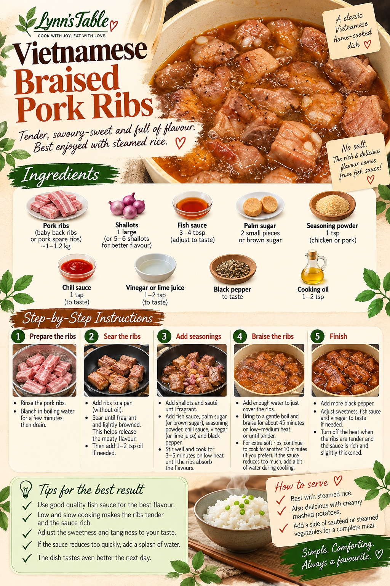

Vietnamese Braised Pork Ribs
Sườn Rim Nước Mắm
Tender, savoury-sweet and full of flavour. Best enjoyed with steamed rice or creamy mashed potatoes.

Ingredients
- 1–1.2 kg pork ribs — baby back ribs or pork spare ribs
- 1 large shallot, or 5–6 shallots for better flavour
- 3–4 tbsp fish sauce
- 2 small pieces palm sugar, or brown sugar
- 1 tsp seasoning powder (chicken or pork)
- 1 tsp chili sauce, to taste
- 1–2 tsp vinegar or lime juice, to taste
- Black pepper, to taste
- 1–2 tsp cooking oil
Method
Prepare the ribs
Rinse the pork ribs. Blanch in boiling water for a few minutes, then drain.
Sear the ribs
Add the ribs to a pan without oil. Sear until fragrant and lightly browned to release the meaty flavour. Then add 1–2 tsp cooking oil if needed.
Add seasonings
Add shallots and sauté until fragrant. Add fish sauce, palm sugar or brown sugar, seasoning powder, chili sauce, vinegar or lime juice, and black pepper. Stir well and cook for 3–5 minutes over low heat until the ribs absorb the flavours.
Braise the ribs
Add enough water to just cover the ribs. Bring to a gentle boil and braise for about 45 minutes over low–medium heat, or until tender. For extra-soft ribs, cook for another 10 minutes if you prefer. If the sauce reduces too much, add a little water during cooking.
Finish
Add more black pepper. Adjust sweetness, fish sauce and vinegar to taste if needed. Turn off the heat when the ribs are tender and the sauce is rich and slightly thickened.
Sườn Rim Nước Mắm
Nguyên liệu
- Sườn non
- 1 củ hành tím lớn
- 3–4 muỗng cà phê nước mắm
- 2 viên đường thốt nốt nhỏ hoặc đường vàng
- 1 muỗng hạt nêm
- 1 muỗng tương ớt
- ½–1 muỗng giấm hoặc cốt chanh, tùy khẩu vị
- Tiêu
- 1–2 muỗng cà phê dầu ăn
Cách làm
1. Rửa sườn, chần nhanh qua nước sôi rồi để ráo.
2. Áp chảo không dầu cho sườn thơm và xém nhẹ. Khi sườn săn lại, thêm dầu và hành tím, đảo 1–2 phút.
3. Cho nước mắm, đường, hạt nêm, tiêu, tương ớt và giấm/cốt chanh. Xào lửa nhỏ 3–5 phút.
4. Cho nước vừa ngập sườn. Rim lửa vừa khoảng 45 phút; có thể thêm tối đa 10 phút để sốt sánh hơn.
5. Thêm tiêu, nếm lại và điều chỉnh nước mắm hoặc đường nếu cần.